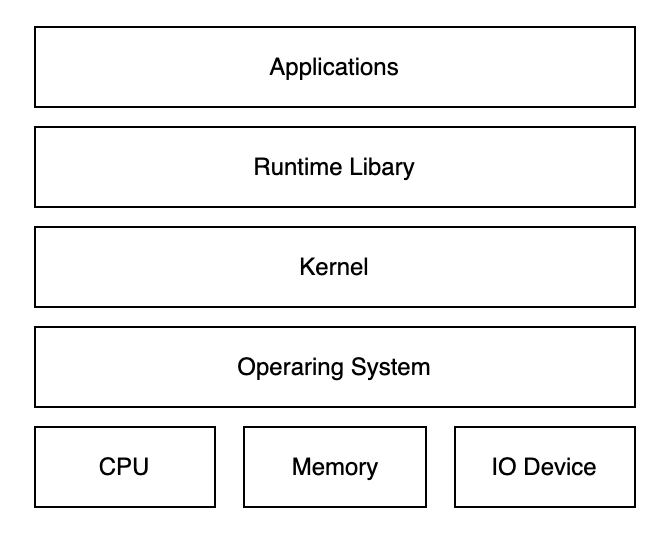

容器
容器是通过 Linux 内核中内置的过程隔离和虚拟化功能来实现，使多个应用程序组件能够共享主机操作系统的单个实例的资源，容器提供了可移植性，可保证环境间的一致性。 相对虚拟机，容器技术不仅具备虚拟机的所有功能和优势， 更有许多突出的优点，如资源利用率的提高、更轻巧、大幅提高开发人员工作效率（更适合持续集成和持续交付以及 DevOps方面的实践）。
而现在最流行的容器实现是Docker，按Docker发展的规模和流行程度，两个概念互相替换使用也没有问题。
理解容器和Docker
其实容器技术也并不是什么新鲜事务，早在Docker之前与容器相关的首批技术就已经出现了很久（chroot），特别是 2008 年Linux 内核中实现了 LinuXContainers (LXC)，LXC 完全支持单个 Linux 实例的虚拟化。
理解容器得从计算机资源的角度出发，管理这些资源的是操作系统，操作系统提供的功能包括：
- 硬件管理 CPU、内存资源的分配；从网络、存储设备等IO设备读写数据
- 软件管理 各种软件的运行，线程、进程调度之类的工作。
- 操作系统内核（Kernel）和 运行库（Runtime Library）为软件提供运行环境
图：硬件、操作系统、应用程序之间关系
随着硬件的性能提升，以及软件种类的丰富，有两种情况变得很常见：
- 硬件性能过剩——很多计算机的硬件配置，即使不能完全满足峰值性能的要求，也往往会有大量时间处于硬件资源闲置的状态。
- 软件复杂性冲突——因为业务需要，两个或者多个软件之间冲突，或者需要同一个软件的不同版本
虚拟机的问题
硬件资源过剩以及软件复杂性的问题崔生出了虚拟化的发展，这类虚拟化软件的主要技术是Hypervisor
虚拟机的一个缺点在于通常会占用不少硬件资源，一个无图形的Linux根据发行版以及安装软件的不同也会占用100~1G内存，1~4G硬盘空间。而且为了应用系统运行的性能，往往还要给每台虚拟机留出更多的内存容量。虽然不少Hypervisor支持动态内存，但基本上都会降低虚拟机的性能。
如果说这样的资源占用少量的虚拟机还可以接受的话，同时运行十数台数十台虚拟机的时候，浪费的硬件资源就相当可观。
容器技术的出现
能不能所有的应用使用同一个的操作系统减少硬件资源的浪费，但是又能避免包括运行库运行库在内的软件冲突呢？操作系统层虚拟化——容器概念的提出，就是为了解决这个问题。在Linux可以通过控制组（Control Group，通常简写为cgroup）隔离，并把应用和运行库打包在一起，来实现这个目的。
图：容器和Type II虚拟机、物理机的区别

上图中，每一个App和Lib的组合，就是一个容器。也就是Docker图标里面的一个集装箱。和虚拟机相比，容器有以下优点：
- 迅速启动：没有虚拟机硬件的初始化，没有Guest OS的启动过程，可以节约很多启动时间，这就是容器的“开箱即用”。
- 占用资源少：没有运行Guest OS所需的内存开销，无需为虚拟机预留运行内存，无需安装、运行App不需要的运行库/操作系统服务，内存占用、存储空间占用都小的多。相同配置的服务器，如果运行虚拟机只能运行十多台的，通常可以运行上百个容器毫无压力——当然前提是单个容器应用本身不会消耗太多资源。
Docker
Docker把App和Lib的文件打包成为一个镜像，并且采用类似多次快照的存储技术，例如aufs/device mapper/btrfs/zfs等，可以实现：
- 多个App可以共用相同的底层镜像（初始的操作系统镜像）
- App运行时的IO操作和镜像文件隔离；
- 通过挂载包含不同配置/数据文件的目录或者卷（Volume），单个App镜像可以同时用来运行无数个不同业务的容器。
图：容器

上图是基于一个Alpine Linux的镜像，分别建立了Nginx和Redis的镜像，并且挂载不同的配置/数据同时运行3个网站应用2个Redis应用的示意图。
此外，Docker公司提供公共的镜像仓库（Docker称之为Repository），Github connect，自动构建镜像，大大简化了应用分发、部署、升级流程。加上Docker可以非常方便的建立各种自定义的镜像文件，这些都是Docker成为最流行的容器技术的重要因素。
通过以上这些技术的组合，最后的结果就是，绝大部分应用，开发者都可以通过docker build创建镜像，通过docker push上传镜像，用户通过docker pull下载镜像，用docker run运行应用。用户不需要再去关心如何搭建环境，如何安装，如何解决不同发行版的库冲突等问题， 这也是Docker大行其道的原因。
Docker的实现：Namespace
Docker最初是基于Linux设计的容器技术，它的实现依赖众多的基础机制，包括用于资源限制的cgroup、用于资源隔离的namespace，以及用于实现docker文件系统的Union FS等。

Namespace是Linux提供的一种内核级别环境隔离的方法，很多编程语言也有Namespace，编程语言中的Namespace是为了实现不同的命名空间使用相同的函数名或类名。 而Linux的Namespace也是为了实现资源能够在不同的命名空间有相同的名称。
Docker就是使用Namespace相关的技术为容器运行提供隔离的空间
| 命名空间 | 备注 |
|---|---|
| pid namespace | 进程隔离 |
| net namespace | 管理网络接口 |
| ipc namespace | IPC资源访问控制 |
| mnt namespace | 文件系统挂载控制 |
| utc namespace | 隔离内核和版本标识符 |
| user namespace | 提供用户隔离 |
从上面的介绍也可以理解：容器只是运行在宿主机上的一种特殊进程，那么多个容器之间使用的还是宿主机的操作系统内核。这就导致你不能在Windows宿主机上运行Linux内核，或者在低版本Linux上运行高版本Linux内核。